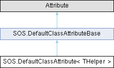

- Generated by
 1.15.0
1.15.0
|
S.O.S - Standard Operations Schematics
SOS SDK Documentation
|
Generic variant of DefaultClassAttribute that defines the fallback helper type via a generic type parameter. More...

Generic variant of DefaultClassAttribute that defines the fallback helper type via a generic type parameter.
| THelper | The static helper class containing public static fallback methods matching the interface. |
| THelper | : | class |
Definition at line 101 of file DuckProxy.cs.